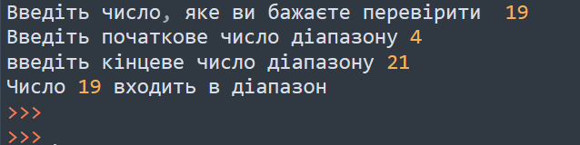
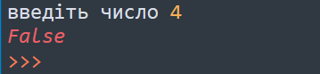
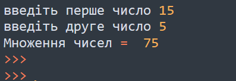

Тема 6.
Функції
Теорія
Завдання
Спільне розв'язання
Завдання №1
Напишіть функцію Python, щоб перевірити, чи є число ідеальним чи ні. Ідеальне число — натуральне число, що дорівнює сумі його додатних дільників, не враховуючи самого числа.
Завдання №2
Напишіть програму де потрібно створити лямбда-функцію, яка додає 15 до заданого числа, також створіть лямбда-функцію, яка множить аргумент x на аргумент y і виведе результат
Домашня робота
Завдання №1
Напишіть функцію, щоб перевірити, чи потрапляє число в заданий діапазон.
Приклад вхідних і вихідних даних:

Завдання №2
Напишіть функцію, яка приймає число і перевірте, чи є число простим чи ні. Вивести у вигляді True або False Просте число — це натуральне число, яке має рівно два різних натуральних дільники (лише 1 і саме число). Послідовність простих чисел починається так: 2, 3, 5, 7, 11, 13, 17, 19, 23, 29, 31, 37, 41, 43, 47, 53, 59, 61, 67, 71, 73, 79, 83, 89, 97, 101, 103, 107, 109, 113 , 127, 131, 137, 139, 149 …
Приклад вхідних і вихідних даних:

Завдання №3
Напишіть програму де потрібно створити функцію, яка приймає число, і це число буде помножено на інше невідоме задане число. Для повернення функції використати lambda.
Приклад вхідних і вихідних даних:
